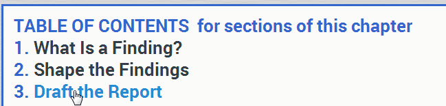
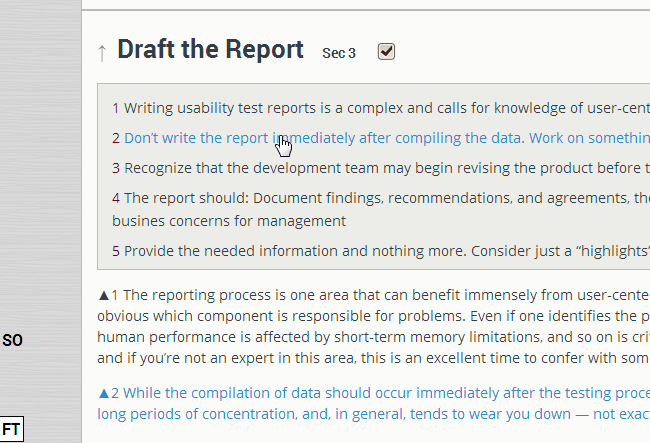
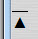

The High Contrast and Large Font options are intended primarily for people with impaired vision.
Your 1-Minute Introduction to QuikScan
The TABLE OF CONTENTS jumps you to any section of the text. Click section headings to jump back to the TOC.

The gray boxes are carefully written summaries. The numbers point you to where each summarized idea is discussed in the text. You can also click.
In each section, clear the checkbox to hide the full text and read the summary only. (If the checkbox is not displayed, just click the region where the checkbox is supposed to be visible.)

Click SO (Summaries Only) to read all the summaries but not the full text.
Click FT to read the summaries and the full text. Doing so greatly increases retention.
This link, or the HOME key, takes you to the top: 
To learn all the benefits of QuikScan and how use can use it, visit QuikScan.org.